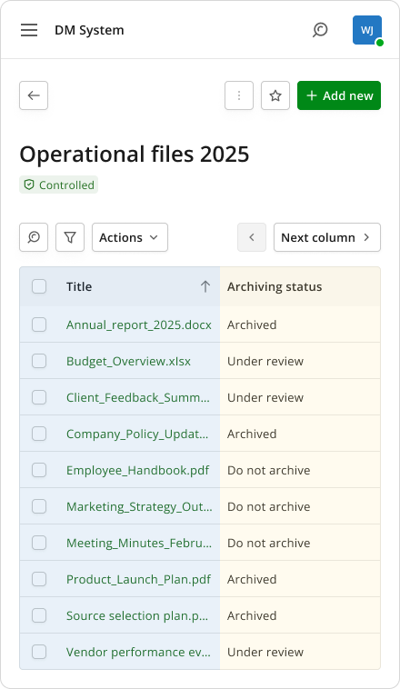

Two weeks to a working answer
AI support for hiring approvals in healthcare
I gave the AI half the screen. The other half stays the candidate's record, so nobody has to trust it blindly.
I’m a product designer working on enterprise software. For the last 3 years, I’ve worked on 12 products for a Big Four client. I come from marketing and brand, work with design systems, and use AI every day.
AI support for hiring approvals in healthcare
I gave the AI half the screen. The other half stays the candidate's record, so nobody has to trust it blindly.


Secure document management system
I kept the old layout on purpose, so people moving off a system they resented did not have to relearn it.


Market intelligence platform for public sector opportunities
I let people build their own search, instead of filling in a fixed form of dozens of boxes.



Design system steward, enterprise product suite
I improved the system from how designers actually used it, starting with their live projects.

Custom merchandise ordering for teams. Design test assignment.
I replaced 250 chasing conversations with one link, and answering it needs no account.
I started in marketing. For six years I built brands and led creative teams of up to 12 people, working side by side with designers every day. In 2022 I moved to Poland and wanted work that could move with me. Product design was the obvious choice. I already knew how designers think and work, and after years of building brands, I wanted to build products.
Since then I’ve designed fintech and Web3 products for startups. For the last 3 years, I’ve worked on enterprise products for a Big Four client, including hiring tools, secure document systems, a platform for government contracts, and a design system shared across many of them.
Marketing still shapes how I work. I think about the business goal as much as the people using the product, and I’m comfortable presenting and explaining my decisions to stakeholders. I design in Figma and use AI every day, at work and in my own projects.
You have been highly creative, an out-of-the-box thinker, and someone who picks things up very quickly. I was always impressed by your fast turnaround and the quality of your work... I would highly recommend you for any project.